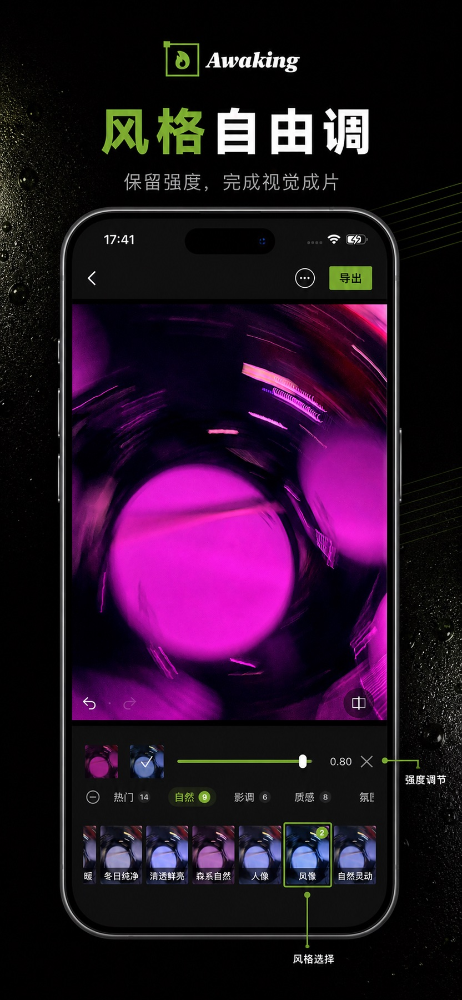

On-device photo editor · iPhone & iPad
把一张照片，
做成你的作品。
导入照片，调整影调与色彩，叠加滤镜和预设，用可继续编辑的局部蒙版控制画面，再完成构图、拼接与无水印导出。
已在 App Store 上线 · 当前公开版本 1.0.0 · App ID 6760924133
- 照片在设备本地处理
- 无需注册账号
- 标准导出不加水印

Focused mobile editing
不是把工具堆满屏幕，
而是让每一步都看得见。
Awaking 把滤镜、蒙版、调色、构图和导出组织成一条可以回看、可以微调的编辑路径。你看到的预览，应当能够延续到最终作品。
从原图到成片
风格可以大胆，
控制依然清楚。
从整体色调到局部区域，Awaking 让风格变化有入口、强度有反馈、结果有去处。
- 滤镜与预设快速建立整体风格，再按强度继续调整
- 局部蒙版用形状、渐变、套索和模板聚焦画面区域
- 调色与构图继续整理光影、色彩、比例、旋转与拉直
Editing capabilities
一套完整的本地修图路径
每张图只展示一个核心能力。以下视觉来自现有产品素材，用于说明当前编辑方向，不作为 App Store 审核截图证明。



A clear workflow
从导入到导出，
每一步都能继续。
Awaking 1.1.0 聚焦当前真实开放的免费编辑链路，不把未来商业化或尚未发布的能力写进官网承诺。
导入照片
从系统照片库选择图片，或使用相机拍摄后进入编辑。
建立风格
从滤镜、预设、调色和稳定特效开始形成画面方向。
局部微调
使用形状、渐变、套索、导入与精选模板蒙版控制局部。
完成导出
核对最终结果，再保存回系统相册或打开分享面板。
Awaking · iPhone & iPad
下一张作品，从这里开始。
Awaking 已在 App Store 上线，当前可下载版本为 1.0.0。1.1.0 发布后会继续通过同一产品页提供更新。